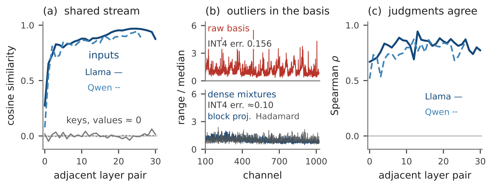
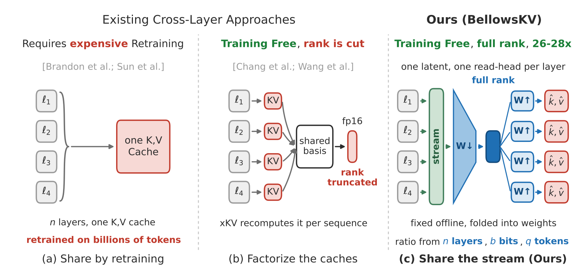

长上下文推理里最占显存的往往不是模型权重，而是每层各存一份的 KV cache（注意力层为每个历史 token 存下的键和值）。BellowsKV 的判断是：相邻几层的缓存本身彼此几乎不像，但算出这些缓存的输入隐藏状态很像，所以该共享的是"输入"而不是"缓存"。它不需要训练，把每 n 层的隐藏状态压成每个 token 一个共享向量，各层读的时候再用自己的矩阵还原出键和值；向量维度不砍，只降精度、只丢不重要的 token。在 Llama-3.1-8B 等 3 个模型上，压到约 14 倍时仍保留 97%–98% 的原始准确率，而此前最强的跨层方法在 16 倍时最多保留 84%，解码速度和不压缩基本持平。
做大模型推理服务、长上下文或 Agent 后端的工程师值得读，原因是它给了一条很实用的经验：压缩缓存时先保维度、再降位数、最后才丢 token。这条经验在三个模型、三套评测上都成立，而且方法是离线算一次投影矩阵、不用重新训练，接入门槛不高。不过解码测速只用了 HuggingFace 的默认实现，没有自定义算子，Qwen2.5 上还有一组结果连作者也解释不了，上线前需要自己复测。
它到底在解决什么问题？
先看一笔账（示意，数字取自论文的 Llama-3.1-8B 例子）。一条 13.1 万 token 的序列，16 位精度下 KV 缓存约 16.8 GB，已经比模型本身还大；服务时权重只加载一份，但每条并发序列都要自己的缓存。
| 示意场景 | 权重 | KV 缓存 | 说明 |
|---|---|---|---|
| 1 条 13.1 万 token 序列 | 16 GB | 16.8 GB | 缓存已超过权重 |
| 8 条并发 | 16 GB | 134 GB | 缓存随并发线性涨 |
| 常见方法压 4 倍 | 16 GB | 约 33 GB | 仍然放不下多少并发 |
| 目标压到 14 倍左右 | 16 GB | 约 10 GB | 同样显存能多跑几倍序列 |
这说明想要真正省显存，压缩率得上一个数量级。可现有方法到了这个区间都会明显掉点：量化低于 2 位就崩；丢 token 丢了就找不回来，后续轮次需要也没用；砍通道维度会删掉注意力还要用的信息。最近有人尝试让相邻几层共用一份压缩缓存，在 4 倍时还行，到 16 倍也大幅掉点。
先做了三个测量

作者没有直接上方法，而是先在不压缩的模型上测了三件事，每件事对应一个设计决定。
第一项测量发现，相邻层的缓存不像，输入却很像：相邻两层的键向量余弦相似度接近 0，值也一样；但它们的输入隐藏状态相似度达到 0.82–0.87，而且越深越像。原因是两层吃的是几乎相同的输入（残差连接让隐藏状态一层层累加），却各自用不同的投影矩阵算键和值。这意味着把一层的缓存直接借给另一层用必然出错，该共享的是输入。
第二项测量发现，共享向量没有数值特别突出的通道。普通 KV 缓存里有少数几个通道数值特别大，量化时它们决定了整组的缩放比例，其他通道就被压得很粗。常见对策是先做一次旋转把数值摊平，但每次读取都要再旋转回来。共享向量的每一维本来就是 n 层所有通道的线性组合，天然是平的，4 位量化误差 0.10，比原始缓存的 0.156 低。
第三项测量发现，相邻层对哪些 token 重要看法一致：两层给同一批 token 打的重要性排名，相关系数在 0.76–0.80 之间。所以一个块只需要做一次丢弃决定，不必每层各做一次。
还有一条是反面结论，作者放到实验里验证：共享向量的维度不能再砍。把多层通道混在一起并不会降低信息的秩，少存几个坐标就是删信息。这一点在后面的实验里专门验证。
整体做法

把模型的层按顺序切成不重叠的块，每块 n 层。对每个块：
- 离线算一次投影。 用一批校准数据，统计这 n 层输入隐藏状态的二阶矩，求一个闭式解：一个"压下去"的矩阵和每层一个"还原回来"的矩阵，让还原出的键值和真实键值误差最小。这一步每个模型只做一次，结果直接合进权重。
- 预填充时存共享向量。 读完提示词后，把每个 token 在这 n 层的隐藏状态拼起来，乘上压缩矩阵，得到一个键向量和一个值向量，替代原来 2n 份缓存。开头几个 token、最近一小段窗口和解码时新生成的 token 仍按原样逐层保存。
- 补一个小修正。 对每条序列，预填充时手上既有真实的键，也有从共享向量还原出的键，两者之差就是还原误差。作者用随机化的低秩近似把这份误差矩阵压成一个很小的基（每条序列一份）加上每个 token 几个系数，存进缓存；读取时把它加回到还原出的键上。这是唯一需要按序列计算的部分，占的空间很小。
- 解码时按需还原。 值不用还原，可以直接把还原矩阵并进输出投影；键要先还原，因为位置编码要加在键上。还原是一次小矩阵乘法，耗时藏在读缓存的内存等待里。
为什么共享向量维度设成和单层键宽一样（R=p）？因为前面说了砍维度会丢信息，作者干脆不砍，压缩全部从别处来。
两种压缩算子
第一个算子 BellowsKV-Quant 负责降精度。它对共享向量做最简单的均匀整数量化，每 128 个相邻坐标共用一个缩放比例；之所以不做旋转、不对单个通道特殊处理，是因为前面测过共享向量本来就是平的。主实验用两档：2 层一块加 8 位整数，以及 4 层一块加 4 位整数。
用一个算例看第二档的压缩率从哪来：4 层只存一份同样宽度的共享向量，层数带来 4 倍；16 位降到 4 位又是 4 倍，理论上 16 倍。因为缩放比例、保留窗口和修正项都要占空间，把这些全算进去，实测是 13.8 倍。
第二个算子 BellowsKV-Evict 负责丢 token。因为每块每个 token 只有一个共享向量，丢弃决定也只能按块做一次。预填充结束后，用最近几个查询对每个 token 的注意力权重打分，把块内所有层、所有头的分数加起来；再在 13 个位置的窗口里取最大值，让被保留 token 的邻居也跟着留下；最后按分数保留前一部分，加上前 4 个位置和提示词最后 64 个位置，其余一次性丢掉。
实验结果
评测覆盖 5 个模型和三套协议：LongBench 八项任务的绝对分、按原模型得分算的保留率，以及一个需要逐字读取检索证据的 Agent 任务。
| 对比（Llama-3.1-8B，保留率） | 压缩倍数 | 保留率 |
|---|---|---|
| BellowsQ，2 层 + 8 位 | 3.6 倍 | 98.9% |
| xKV（共享低秩基） | 4 倍 | 98.2% |
| BellowsQ，4 层 + 4 位 | 13.8 倍 | 98.0% |
| xKV | 16 倍 | 83.5% |
| CommonKV | 约 16 倍 | 53.6% |
| BellowsQ，4 层 + 3 位 | 17.7 倍 | 98.4% |
这说明到 14–18 倍区间，它几乎不掉点，而现有跨层方法明显掉队；直接共享原始缓存的方法在 1.3 倍时就已经掉到 75% 左右，印证了"缓存本身不该共享"。
为什么 xKV 在 16 倍会崩？ 作者做了一个对照：同一个 xKV 共享基，原本靠把秩砍到四分之一达到 16 倍；改成不砍秩、改存 4 位，压缩到 15.1 倍，Llama 上保留率从 83.5% 回到 97.6%，Mistral 从 79.5% 回到 99.2%。这说明 xKV 掉点的原因是砍了维度，而不是"共享"本身。
在要求更严的 Agent 任务上，结论同样成立。这个任务用 BrowseComp-Plus 的 830 条查询，先检索再阅读回答，由评测自带的评判模型打分，换了两个前面没用过的模型 Qwen3-32B 和混合专家结构的 Qwen3-30B-A3B。压缩约 14.6 倍时，BellowsQ 在两个模型上分别得 86.0 和 85.8，原模型是 85.5 和 86.1，几乎没差；而 xKV 在 Qwen3-32B 上压到 8 倍就只剩 26.5 分，说明这类要逐字引用证据的任务对砍维度更敏感。
丢 token 的实验也显示按块更划算。在相同显存下，按块统一丢比每层各自丢高 0.9–3.0 分（约 8 倍）和 5.3–6.6 分（约 16 倍）。原因是按块丢的单位是一份共享向量，同样的显存能留下更多 token。
解码速度方面，在 H100 显卡上，32k 上下文、HuggingFace 默认实现，解码速度是不压缩时的 0.995 倍，说明还原开销基本可以忽略；省出的显存在 vLLM 推理框架下让 KV 缓存池扩大到 14.8 倍。
我认为它的局限
- 省的是容量，不是速度。 作者自己推出的公式里，解码加速只取决于维度和读取时的位数，跟共享层数无关；维度不砍、读取按 16 位，所以解码不会更快。如果瓶颈是单条请求的延迟而不是并发，它帮不上忙。
- Qwen 上有说不清的失败。 在 Qwen2.5 上，凡是把 xKV 共享基存成 4 位的设置都崩了，其中一组保留率只有 23.4%，原因不明；vLLM 下缓存池扩大 14.8 倍、比字节压缩比 13.8 倍还高，原因同样没查清。这类现象在换模型时可能重演。
- 工程实现还很初步。 解码测速没有写自定义算子，与 vLLM 的结合只报告了缓存池大小，没有端到端吞吐。另外每条序列要额外拟合修正项，预填充阶段的额外耗时需要自己测。
一个推理服务团队可以怎么试
- 先确认瓶颈在缓存。 统计线上长上下文请求的并发数被什么卡住：如果是显存不够放缓存，这个方法对路；如果是单条延迟，收益有限。
- 离线复现保留率。 用开源代码在自家模型上算投影矩阵，先跑 4 层 + 4 位这一档，用自己的长文本评测集对比原模型的保留率。
- 重点测换模型的稳定性。 鉴于 Qwen 上的异常，换一个模型族时，至少把 2 层 + 8 位和 4 层 + 4 位两档都跑一遍，看是否有个别任务大幅掉分。
- 再测服务指标。 接入推理框架后，测同样显存下能多跑多少并发、预填充多花多少时间，以及每秒生成 token 数是否下降。
一句话结论
| 维度 | 评价 |
|---|---|
| 问题价值 | 高，长上下文和 Agent 服务的显存瓶颈主要在缓存 |
| 方法新意 | 中高，先测"该共享什么"再设计，结论清楚 |
| 证据强度 | 较强，5 个模型、三套评测、完整对照，但服务层数据少 |
| 落地难度 | 中，免训练，但要改注意力读取路径 |
| 适合谁 | 做长上下文推理服务、需要提高并发的团队 |
BellowsKV 用"共享输入、保住维度、先降位数"三步，把跨层缓存压缩推到了约 14 倍还几乎不掉点，值得做推理服务的团队拿来复测。
读完这篇，你觉得
夜读鸮记下了，谢谢你的反馈。
点一下即可，无需登录；再点一次撤回。只统计匿名次数，不记录你是谁。
讨论
欢迎补充实验细节、复现经验或不同看法。需 GitHub 登录。
正在加载讨论…